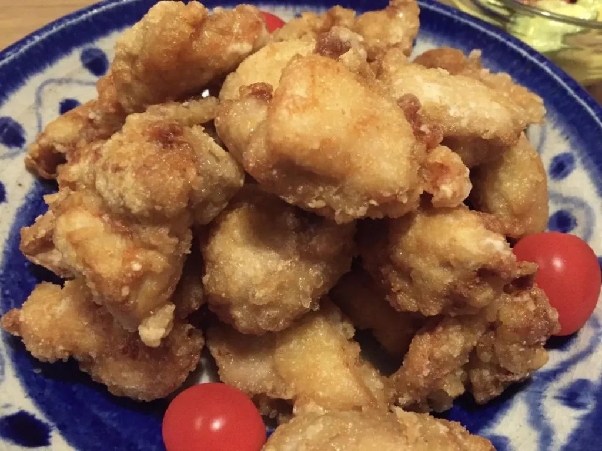

Karaage

Ingredienten
- 500 gram kipdijfillet
- 2 theelepels aardappelzetmeel
- 1 eetlepel mayonaise
- 1 eetlepel sojasaus online verkrijgbaar
- 1 eetlepel sake
- 1/2 theelepel gemberpuree
- 1/2 theelepel knoflookpuree
- 1/2 theelepel zout
- 1 theelepel sesamolie
Bereiding
- Stap 1
We beginnen met het klein snijden van de kippendijen. Maak stukjes van ongeveer 1-2 centimeter groot.
- Stap 2
Meng de mayonaise, sojasaus, gemberpuree, knoflookpuree, sesamolie en sake tot een gladde saus. Marineer vervolgens de gesneden kip goed met de saus. Zet de gemarineerde kip een paar uur in de koelkast zodat de smaak goed in het vlees kan trekken.
- Stap 3
Haal de gemarineerde kip uit de koelkast en doe het aardappelzetmeel op een bord. Haal alle kip stukken door het aardappelzetmeel zodat ze licht bedekt zijn aan alle kanten.
- Stap 4
Zet een koekenpan op het vuur en bedek de bodem met ongeveer 2 centimeter zonnebloemolie. Als de olie op temperatuur is doe een aantal kip stukken in de pan. Frituur ze 4-5 minuten tot ze aan alle kanten goudbruin zijn.
- Stap 5
Haal de kip stukken uit de olie en laat ze staan nog 4-5 minuten. Zo worden ze ook van binnen goed gaar door hun eigen warmte en worden ze niet te hard.
- Stap 6
Zet een groot bord met karaage midden op tafel zodat iedereen er goed bij kan, en smullen maar. Dit kipgerecht is van zichzelf al erg lekker. Sprenkel naar smaak wat citroensap over de kip stukken of serveer met sweet chilli saus.